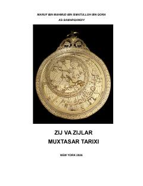

ZVO'rta asr Sharq astronomiyasidagi zijlar tarixi va ularning ilmiy ahamiyatiga bag'ishlangan tadqiqot.
Ushbu asar o'rta asr Sharq astronomiyasida qo'llanilgan muhim ilmiy manbalar — zijlar tarixi, ularning kelib chiqishi, etimologiyasi va mavjud qo'lyozmalar ro'yxatiga bag'ishlangan. Tadqiqotda 8-asrdan 15-asrgacha bo'lgan davrda arab va fors tillarida yozilgan astronomik jadvallarning mazmuni va o'zaro aloqalari tahlil qilingan. Kitob ilmiy-tarixiy ma'lumotlarga boy bo'lib, o'rta asr ilmiy merosini o'rganishda muhim qo'llanma bo'lib xizmat qiladi.